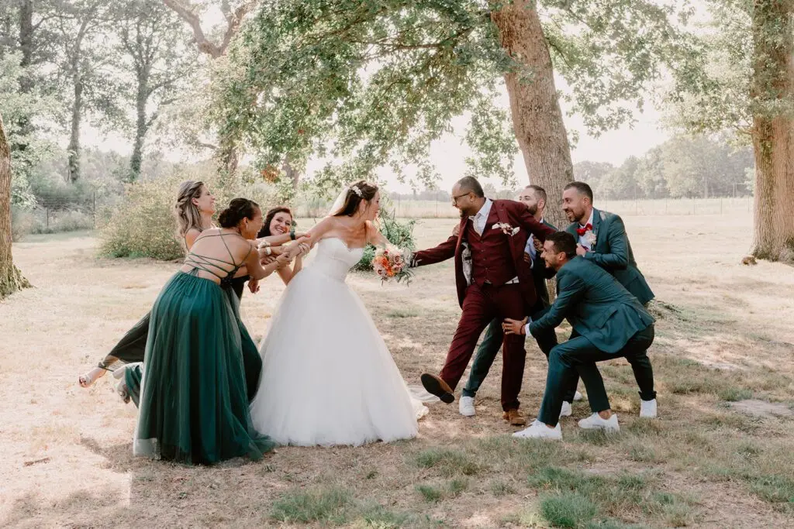
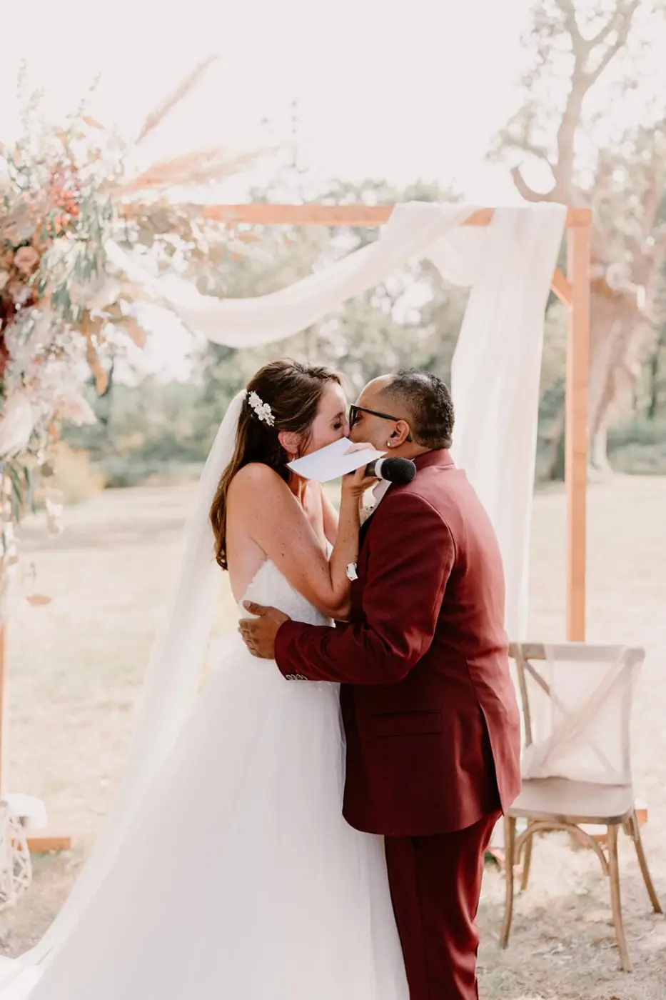
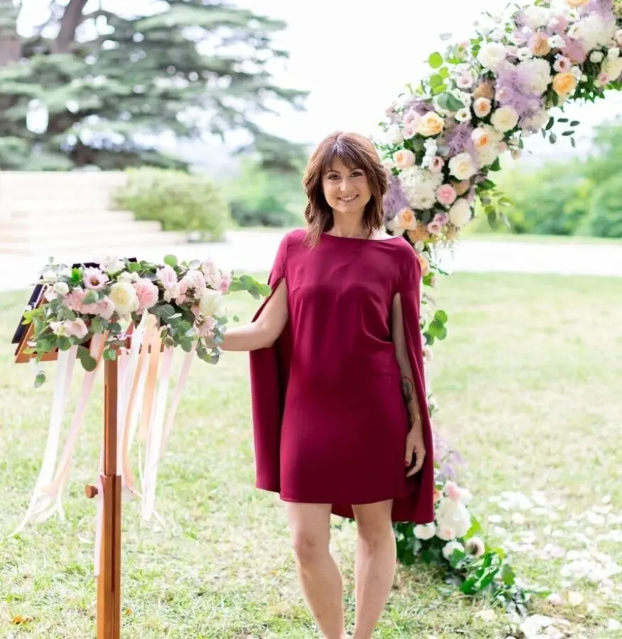
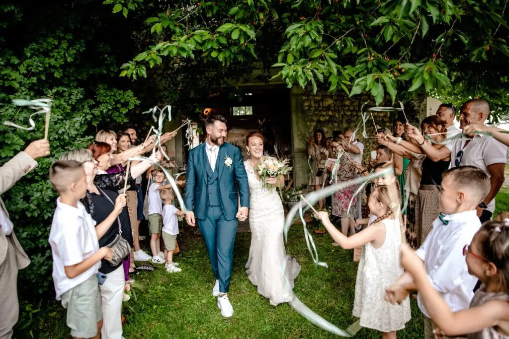
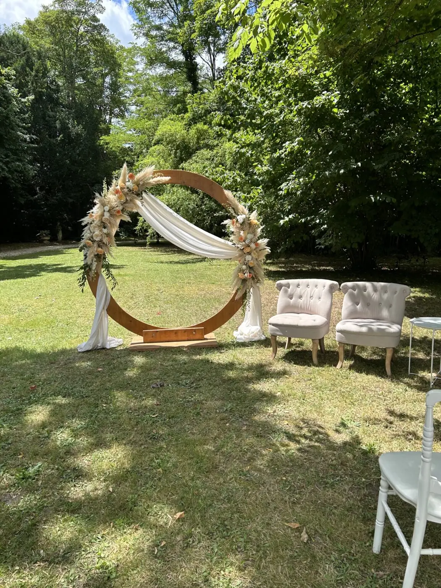
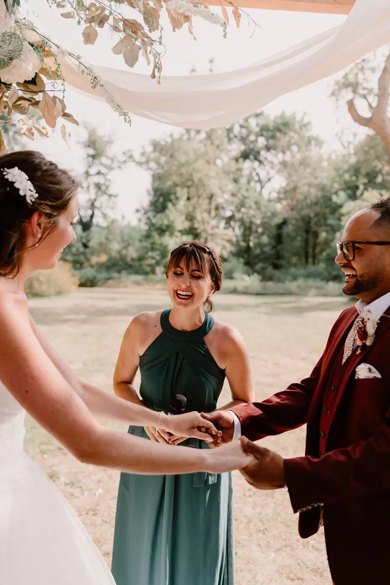
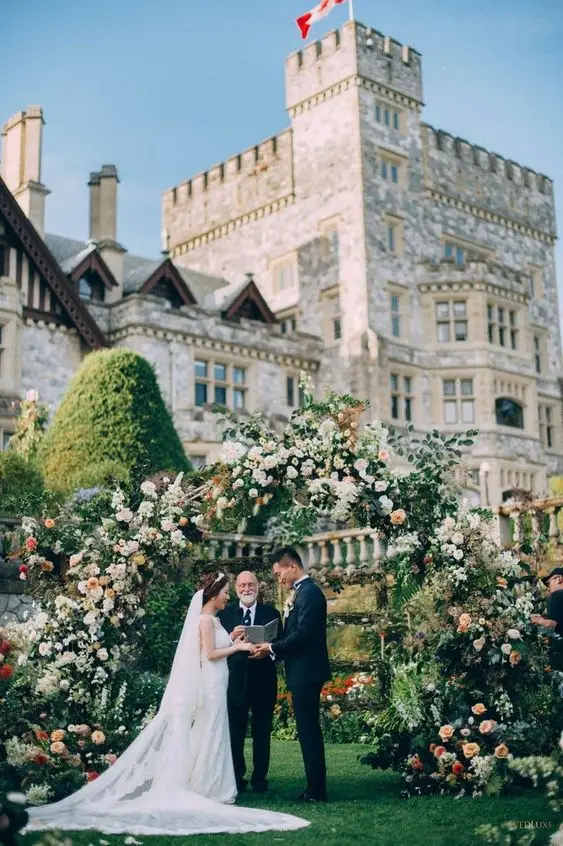
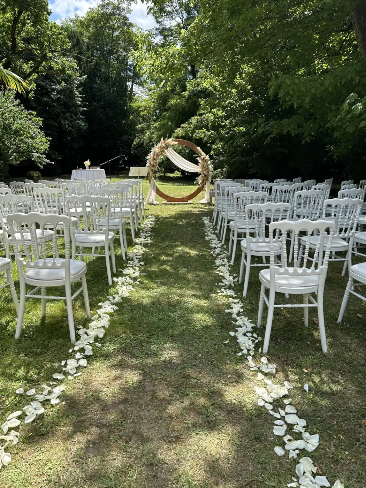
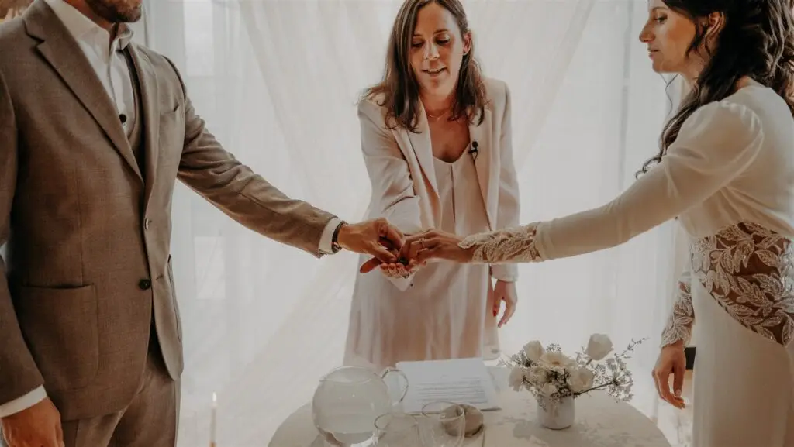

A wedding is a unique, memorable event in the life of every couple. However, not everyone wants to follow religious or civil traditions to seal their union. That is where the symbolic ceremony comes in. A true celebration of love and closeness, it offers total freedom in the choice of rites and speeches. In this article, we explore how to organise a symbolic ceremony near Bordeaux, focusing on the convivial, personal side of this unique event.
Understanding the symbolic ceremony

What is a symbolic ceremony?
A symbolic ceremony is a non-religious celebration of the union between two people. It stands out for its great flexibility and its ability to be fully personalised to the couple's wishes. Unlike religious ceremonies, there are no imposed rituals, making it possible to create a moment that perfectly reflects the values and personality of the couple.
Why choose a symbolic ceremony?

Opting for a symbolic ceremony has several advantages. First, it allows total personalisation, offering a unique, made-to-measure experience. Next, it can take place wherever you like, whether outdoors, in a garden, on a beach or even in a place that is symbolic for your love story. Finally, it encourages a convivial, intimate atmosphere where family and friends feel involved and can take an active part.
The history and evolution of symbolic ceremonies
Symbolic ceremonies are nothing new; they have their roots in ancient traditions where love and commitment were celebrated outside religious institutions. Over time, the practice has adapted and modernised to meet the needs of today's couples, who want to celebrate their union in a personal, authentic way. This evolution reflects an increasingly inclusive and open society, where everyone can choose how they wish to express their love.

How do you plan a symbolic ceremony?
Choosing the venue
Choosing the venue is crucial for a successful symbolic ceremony. It must not only be beautiful and romantic, but also mean something special to the couple. You can opt for an outdoor setting such as a park, a beach, a vineyard or even the family garden. Indoor venues such as châteaux, reception rooms or historic houses can also offer an enchanting setting.
To find the ideal venue, think about what matters to you as a couple. Perhaps there is a place where you spent unforgettable moments, or one that represents a key stage in your relationship. Visit venues and talk to the owners to make sure the place can accommodate every aspect of your ceremony.


Choosing the officiant
The officiant plays a central role in a symbolic ceremony. They may be a professional or someone close to you whom you trust. Your choice of officiant should reflect your values and your vision of love. A close friend, a family member or even a mentor can add a personal, touching dimension to your ceremony.
When choosing an officiant, make sure they are comfortable speaking in public and fully understand your vision of the ceremony. It is important to meet your officiant several times before the big day to discuss the details of the ceremony, the chosen texts and any symbolic rituals you want to include.
Writing your vows
The vows are one of the most moving moments of the symbolic ceremony. They let the couple express their love, their commitments and their hopes for the future. Take the time to think about what you want to say. Talk about how you met, the highlights of your relationship and why you have chosen to unite. Don't hesitate to add a touch of humour or personal anecdotes to make the moment even more convivial.
To help you write your vows, start by noting down the key moments of your relationship and what you feel for your partner. Think about what you want to promise for the future. Reread your vows several times and have someone you trust read them for feedback. The important thing is to stay authentic and sincere.


Deciding the structure of the ceremony
A symbolic ceremony offers great freedom in its structure. However, it is useful to define an outline so that everything runs smoothly. Here is a basic structure to guide you:
- Welcoming the guests: the officiant welcomes the guests and introduces the ceremony.
- Introduction: the officiant talks about the couple, their story and the meaning of their union.
- Contributions from loved ones: friends and family can read texts or poems, or share anecdotes.
- Exchange of vows: the couple say their vows.
- Symbolic ritual: a ritual chosen by the couple.
- Exchange of rings: a classic, symbolic moment of the ceremony.
- Closing the ceremony: the officiant declares the couple married and invites them to kiss.
- The couple's exit: the couple leave to their guests' applause.
I also offer coaching, and I have created my own outline, which I share with you right here.
How do you personalise your symbolic ceremony?
Choosing a theme
A symbolic ceremony can be organised around a theme that is dear to you. Whether a shared passion, a historical period, a fictional world or a particular style, the theme gives the whole event coherence. It can be reflected in the decor, the outfits, the music and even the speeches.
To choose a theme, think about your shared interests and the things that represent your relationship. A well-chosen theme will make your ceremony even more personal and memorable. For example, if you share a passion for travel, you could include elements from different countries in your decor and rituals.

Including symbolic rituals
Although the symbolic ceremony isn't religious, it can include symbolic rituals that have special meaning for the couple. Popular rituals include the sand ceremony, the candle ceremony, the wishing tree and the exchange of letters. These rituals add an emotional, convivial dimension to the ceremony.
– The sand ceremony: each partner pours sand of a different colour into the same container, symbolising their union and their unique blend.
– The candle ceremony: the couple light a large candle together from two smaller ones, symbolising their new life together.
– The wishing tree: guests write wishes or advice on tags hung on a tree, creating a lasting keepsake for the couple.
– The exchange of letters: the couple write love letters that they seal in a box with a bottle of wine, to be opened on a future anniversary.
Involving your loved ones
Involving your loved ones in the symbolic ceremony strengthens the convivial atmosphere and creates unforgettable memories. Ask your friends and family to read texts, poems or quotes that are dear to you. You can also organise surprise contributions or small games to liven up the ceremony and get everyone involved.
Invite your parents, brothers, sisters or close friends to share stories or anecdotes about you as a couple. These moments can be funny, touching or inspiring, and they add a personal dimension to your ceremony. Be sure to coordinate these contributions carefully so they fit smoothly into the running order of the ceremony.
Preparing the practical details is important
Decor
Decor is a key element in creating the atmosphere you want for your symbolic ceremony. Choose elements that reflect your style and theme. Flowers, garlands, lanterns, ribbons and personalised signs can turn an ordinary place into a fairy-tale setting. Don't forget to provide comfortable seating for your guests and a dedicated space for the exchange of vows. Choose colours and materials that match your theme. For example, for a bohemian theme, opt for natural textiles, fairy lights and wild flowers. For a vintage theme, go for antique objects, lace and pastel shades. The decor should create a convivial, welcoming atmosphere for your guests.
Logistics
Make sure every logistical aspect is well prepared so that the symbolic ceremony runs without a hitch. Prepare a detailed schedule, coordinate the different people involved and plan back-up solutions in case of bad weather, especially if the ceremony is outdoors. Also think about comforts for your guests, such as refreshments, shaded areas or blankets in case it turns chilly. - Timing: draw up a precise programme for the day and make sure everyone involved knows their roles and times. - Equipment: hire chairs, suitable sound equipment, and marquees or parasols if necessary. - The unexpected: plan back-up options for rain, heat or cold. Let your guests know in advance so they can dress accordingly.

Music
Music plays a crucial role in the atmosphere of the symbolic ceremony. Choose pieces that have special meaning for you and your partner. You can opt for live musicians, a DJ or even a personalised playlist. Think about the entrance music, the music for the key moments of the ceremony and the exit music. Create a playlist that reflects your musical tastes and the important moments of your relationship. You can include songs that have marked your story, instrumental pieces for the solemn moments and upbeat tracks for the exit. If you opt for live musicians, discuss the repertoire with them and when the music will play.
Adding your personal touches

Creating memorable keepsakes
To make your symbolic ceremony even more special, think about creating keepsakes that you and your guests will treasure for a long time. You could set up a photo booth with fun props, an original guest book where everyone can leave a message, or personalised gifts for your guests.
A photo booth with themed props can offer moments of entertainment and fun memories for your guests. The guest book can take the form of a photo album, a canvas where guests leave their fingerprints or even a jigsaw puzzle to complete. Personalised gifts, such as small jars of honey, packets of seeds or scented candles, will be much appreciated.
Incorporating family traditions
Even in a symbolic ceremony, you can include family or cultural traditions that have special meaning for you. This might be a ritual passed down through generations, a traditional dance or a typical dish served during the meal.
Talk to your respective families to identify traditions you could include in your ceremony. These elements add a sense of continuity and respect for your origins, while enriching your celebration with love and conviviality.
In short…
Organising a symbolic ceremony for your wedding is a wonderful opportunity to celebrate your love in an authentic, personal way. By taking the time to plan every detail carefully and involving your loved ones, you will create a convivial, memorable day that perfectly reflects your story. Remember that the key is to stay true to yourselves and fully enjoy this unique moment.
Whether you choose a bucolic setting, a chic atmosphere or an original theme, the symbolic ceremony gives you total freedom to express your love in the way that suits you best. With good organisation and a little creativity, your wedding will undoubtedly be an unforgettable day for you and your guests.
Finally, remember that the most important thing is to celebrate your union in a spirit of conviviality and joy. Whatever options you choose, make sure they reflect your love and your commitment to each other. With these tips in hand, you are ready to create a symbolic ceremony that will stay etched in your memories and those of your loved ones forever.